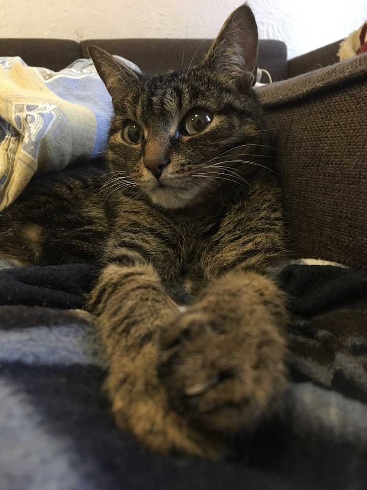

Обо мне
Привет! Меня зовут Зоя, мне 18 лет и я очень люблю изучать иностранные языки. На данный момент я знаю английский, испанский и французский, а теперь, поступив на компьютерную лингвистику, я начала изучать норвежский.
Еще я обожаю животных, особенно кошек и собак. При этом у меня ужасная аллергия на их шерсть и живу я в общежитии, поэтому каждый раз, когда я вижу кошку или собаку, я начинаю плакать (иногда от счастья, иногда от безысходности).
Раньше у меня был кот, которого звали Каспар, и у меня до сих пор есть целая папка его фотографий (на случай, если я захочу поплакать).

Мой родной город - Томск, но последние четыре года я жила в Санкт-Петербурге, где закончила Гимназию №67.
Мои контакты:
- zabutenko@edu.hse.ru (корпоративная почта)
- zoja.butenko@yandex.ru (личная почта)
- lingvo193@gmail.com (групповая почта)